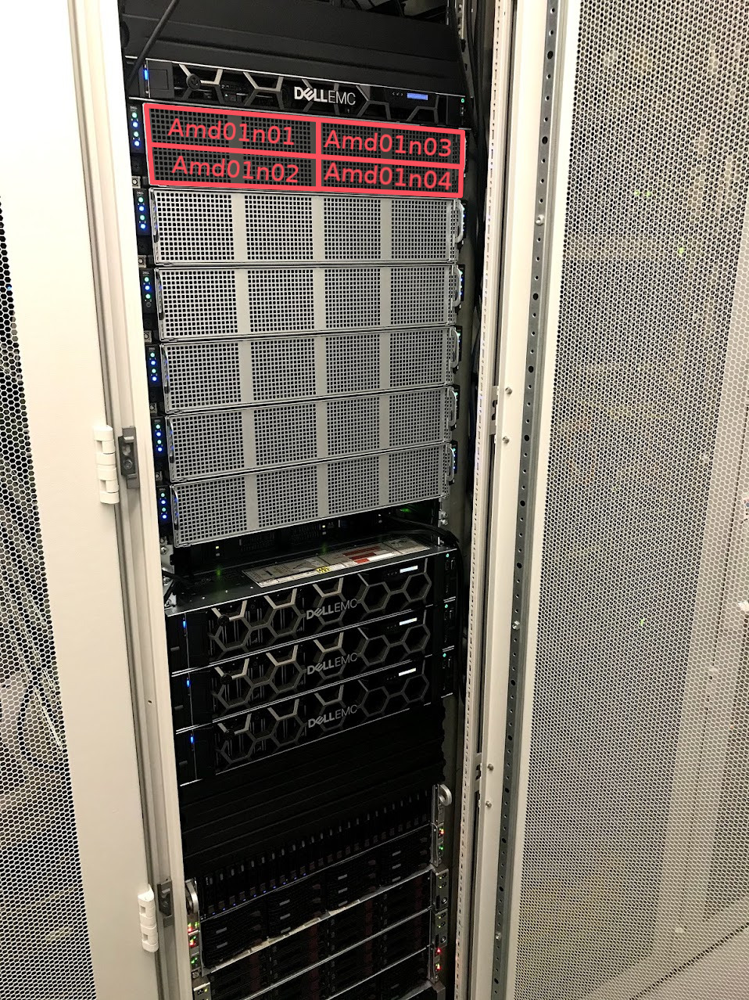
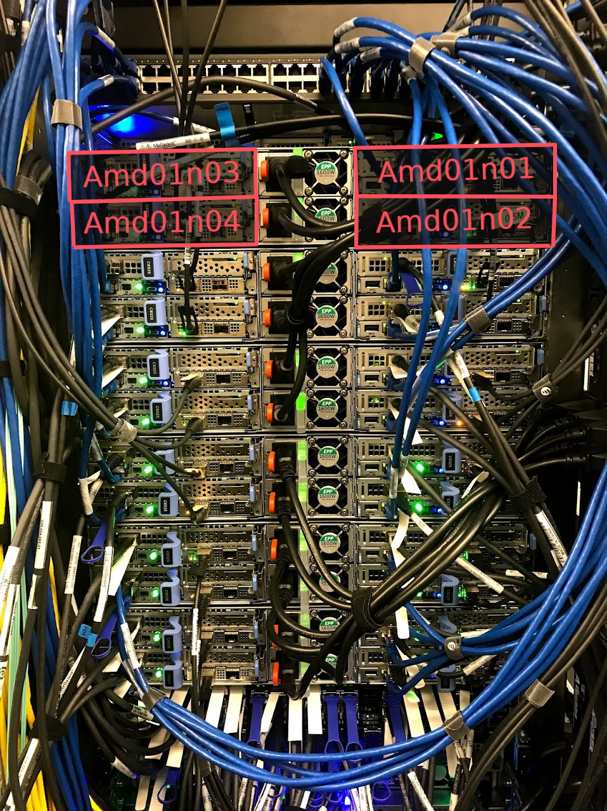
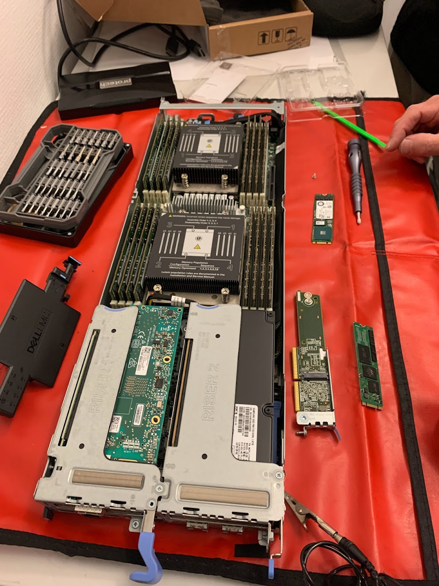
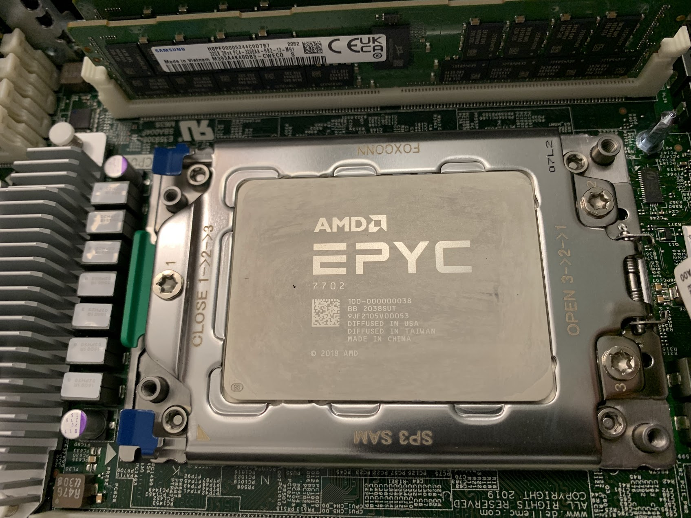

HPC layout¶
NOTE
Understanding the Rāpoi hardware layout is not critical for most users! It is useful for users running big parallel MPI jobs and may be of interest to others.
To a first approximation, a High Performance Computer (HPC) is a collection of large computers or servers (nodes) that are connected together. There will also be some attached storage.
Rather than logging into the system and immediately running your program or code, it is organised into a job and submitted to a scheduler that takes your job and runs it on one of the nodes that has enough free resources (cpu and memory) to meet your job request. Most of the time you will be sharing a node with other users.
It is important to try and not over request resources as requested resources are kept in reserve for you and not available to others, even if you don't use them. This is particularly important when requesting a lot of resources or running array jobs which can use up a lot of the HPCs resources.
Hardware¶
On Rāpoi, the node you login into and submit your jobs to is called raapoi-login.
The computers/servers making up the nodes are of several types, covered in partitions.
Most of the processors in Rāpoi are in the parallel AMD nodes such as AMD01n01, AMD01n02 etc. Figures 1-4 show more details of these nodes.




Network¶
On Rāpoi the nodes are connected to each other in two ways - via 10G ethernet and via 52G infiniband. Most of the time you can ignore this, but it is important for interconnected jobs running across multiple nodes like weather simulations.
In figure 5 we can see the network layout of Rāpoi from the perspective of the Login node. This is the node you ssh into, via the VUW intranet - either from a locally wired connection or via the VPN. The nodes are organised into groups mostly aligning with the partition the node is in.
Ethernet¶
The dashed lines indicate an Ethernet connection, all nodes are connected via ethernet at either 1G or 10G depending on the node. Most of the intel nodes are only connected at 1G due to their age. The newer nodes are all 10G connected. The ethernet connection can also reach out into the wider internet for downloading updates, datasets etc.
Infiniband¶
Many nodes are also connected by a solid line indicating an Infiniband network connection. This connection is faster than the ethernet connection but more importantly lower latency than the ethernet connection. This helps with large interconnected (eg MPI) jobs running across multiple nodes. The latency of the interprocess communication carried over the Infiniband link can have a dramatic affect on large scale calculations which for instance need to communicate grid boundary conditions across the nodes
Where infiniband is available, the scratch storage is transmitted over the link as the latency helps with IO performance.
Looking at the HPC from the perspective of the ethernet and infiniband networks. The nodes in Figure 6 and 7 are the same as before, but we're just using the group container label to simplify the diagram.
The Infiniband nodes are connected to one of two SX6036 Infiniband switches. The intel and quicktest and login nodes are connected to one switch. Everything else is connected to the the other. The switches are broadly interconnected, but there is as small latency penalty for crossing the switch.